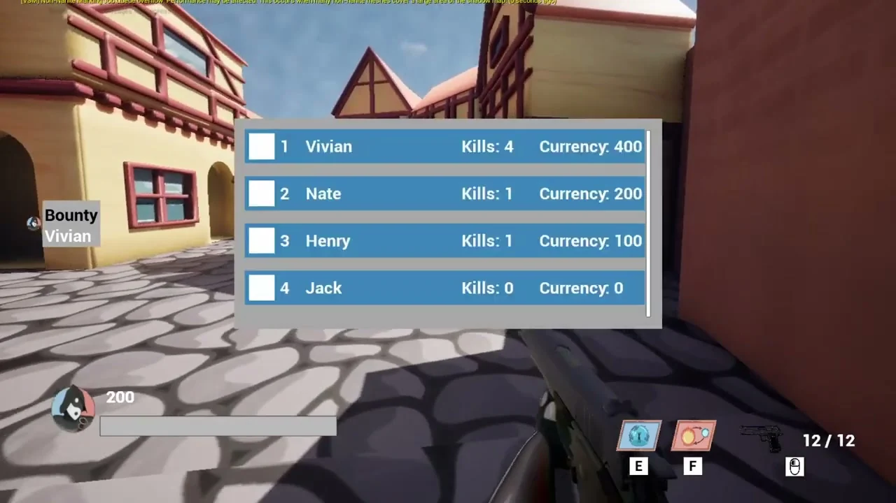

Mags & Magic
Mags & Magic is a multiplayer hero shooter made as a team project in Unreal Engine. I worked on the four-player lobby system, the Vampire and selected Fairy abilities, and the leaderboard shared across the players’ screens.
My contribution
- Worked on four-player lobby flow and connection-error handling.
- Implemented the Vampire’s abilities and passive health regeneration.
- Implemented the Fairy’s flight and Magic Charm.
- Connected player names and kill counts to the leaderboard and bounty system.
Vampire and Fairy abilities
I implemented the Vampire’s dash, which trades health for a speed boost, and Dark Whisper, which pulls another player toward the user. The pull uses a different cooldown depending on whether it connects. The Vampire also regenerates health after a period without taking damage.
For the Fairy, I implemented flight and Magic Charm, a projectile that resets enemy ability cooldowns. My Blueprint work connected these abilities to player input, movement, cooldowns, and the affected character. The gameplay video shows these features alongside the rest of the team’s hero work.
Multiplayer flow
My main responsibility was getting four players into a lobby and able to interact in the same game. I worked on connection handling and recovery from errors, as well as allowing more than one lobby to be active.
This work sat alongside the character abilities: joining a match, controlling the correct character, and showing changes to the other players all had to work together.
Leaderboard and bounties
I built the player-name and kill-tracking features used by the shared leaderboard. The bounty system also used that information to identify players on streaks. The recorded match shows four named players, their kill counts, and the current bounty during gameplay.
